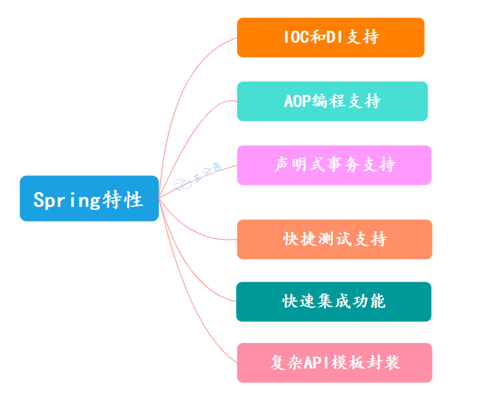

Spring面试八股文（20230701）
Spring面试八股文（20230701）1 Spring IOC1.1 控制翻转和面向切面1.2 Spring有哪些优点呢？1.3 Spring有哪些模块?1.4 Spring常见注解1.5 Spring中应用了哪些设计模式？1.6 什么是IOC？什么是DI？1.7 Spring IOC的实现机制1.7.1 写个mini版本的Spring IOC1.7.2 拓展1.8 什么是BeanFactory和ApplicationContext?1.9 Spring 容器启动阶段会干什么？1.10 Spring Bean的生命周期1.11 Bean定义和依赖定义有哪些？1.12 有哪些依赖注入的方法？1.13 Spring 有哪些自动装配的方式？1.14 Spring中的Bean的作用域1.15 Spring中的单例Bean会存在线程安全问题吗？1.16 Spring怎么解决循环依赖1.18 为什么要三级缓存？二级不行吗？1.19 @Autowired的实现原理2 Spring AOP2.1 什么是AOP?2.2 什么是JDK动态代理和CGLIB代理？2.3 Spring AOP和AspectJ AOP区别？3 事务3.1 事务的种类3.2 Spring的事务隔离级别3.3 Spring 的事务传播机制？3.4 声明式事务实现原理3.5 声明式事务在哪种情况下会失效？4 MVC4.1 Spring MVC的核心组件4.2 Spring MVC 的工作流程？4.3 SpringMVC Restful 风格的接口的流程是什么样的呢？5 Spring Boot5.1 Spring Boot是什么？有哪些优点？5.2 SpringBoot 自动配置原理了解吗？5.3 Springboot 启动原理
1 Spring IOC
1.1 控制翻转和面向切面
控制反转（Inversion of Control，简称IoC）和面向切面编程（Aspect-Oriented Programming，简称AOP）是Spring框架的两个重要概念和特性。
控制反转（IoC）：
- IoC是一种设计原则，也是Spring框架的核心理念之一。它将对象的创建、依赖关系的管理和调用的控制权从应用程序代码中转移到框架或容器中，实现了对象的解耦和灵活性。
- 在传统的编程模型中，对象之间的依赖关系由对象自身负责管理和创建，而在IoC容器中，对象的创建和依赖关系由容器负责，应用程序只需要声明依赖关系，由容器进行注入。
- Spring框架通过依赖注入（Dependency Injection）实现了IoC，提供了多种依赖注入的方式，如构造函数注入、Setter方法注入、接口注入等。这样可以实现松耦合的组件之间的协作。
面向切面编程（AOP）：
- AOP是一种编程范式，用于将横切逻辑（Cross-Cutting Concerns）与核心业务逻辑分离，并通过切面（Aspect）将横切逻辑模块化，减少代码的重复和耦合。
- 在传统的编程模型中，横切逻辑（如日志记录、事务管理、安全检查等）会散布在多个业务逻辑中，导致代码的冗余和复杂性。而通过AOP，可以将这些横切逻辑从业务逻辑中抽离出来，形成独立的切面模块。
- Spring框架提供了AOP的支持，可以通过使用切面（Aspect）和通知（Advice）来实现横切逻辑的模块化。切面定义了横切逻辑的内容，而通知定义了在何时、何地应用切面。通过将通知织入到目标对象中，可以实现对目标方法的增强或拦截。
- Spring AOP基于动态代理技术，可以在运行时生成代理对象，拦截目标方法的调用，并在调用前后执行额外的横切逻辑。
总结起来，控制反转（IoC）和面向切面编程（AOP）是Spring框架的两个关键概念。IoC实现了对象的解耦和依赖关系的管理，通过依赖注入实现了对象之间的协作；而AOP（面向切面编程）将横切逻辑与核心业务逻辑分离，使得横切逻辑可以独立于核心业务逻辑进行开发、维护和重用。
1.2 Spring有哪些优点呢？

- IOC 和 DI 的支持
Spring 的核心就是一个大的工厂容器，可以维护所有对象的创建和依赖关系，Spring 工厂用于生成 Bean，并且管理 Bean 的生命周期，实现高内聚低耦合的设计理念。
- AOP 编程的支持
Spring 提供了面向切面编程，可以方便的实现对程序进行权限拦截、运行监控等切面功能。
- 声明式事务的支持
支持通过配置就来完成对事务的管理，而不需要通过硬编码的方式，以前重复的一些事务提交、回滚的 JDBC 代码，都可以不用自己写了。
- 快捷测试的支持
Spring 对 Junit 提供支持，可以通过注解快捷地测试 Spring 程序。
- 快速集成功能
方便集成各种优秀框架，Spring 不排斥各种优秀的开源框架，其内部提供了对各种优秀框架（如：Struts、Hibernate、MyBatis、Quartz 等）的直接支持。
- 复杂 API 模板封装
Spring 对 JavaEE 开发中非常难用的一些 API（JDBC、JavaMail、远程调用等）都提供了模板化的封装，这些封装 API 的提供使得应用难度大大降低。
1.3 Spring有哪些模块?

最主要的七大模块：
- Spring Core：Spring 核心，它是框架最基础的部分，提供 IOC 和依赖注入 DI 特性。
- Spring Context：Spring 上下文容器，它是 BeanFactory 功能加强的一个子接口。
- Spring Web：它提供 Web 应用开发的支持。
- Spring MVC：它针对 Web 应用中 MVC 思想的实现。
- Spring DAO：提供对 JDBC 抽象层，简化了 JDBC 编码，同时，编码更具有健壮性。
- Spring ORM：它支持用于流行的 ORM 框架的整合，比如：Spring + Hibernate、Spring + iBatis、Spring + JDO 的整合等。
- Spring AOP：即面向切面编程，它提供了与 AOP 联盟兼容的编程实现。
ORM是什么？
ORM（对象关系映射）是一种编程技术，用于将对象模型和关系型数据库之间建立映射关系，从而实现对象与数据库的交互和持久化操作。
在传统的关系型数据库中，数据以表格的形式进行存储和组织，而在面向对象的编程中，数据以对象的形式进行表示和操作。ORM框架的目的就是通过自动化的方式将对象模型和数据库模型之间进行转换和映射，从而简化开发人员在对象和数据库之间的转换工作。
ORM框架通常提供了以下功能：
- 对象关系映射：ORM框架负责将对象和数据库表之间建立映射关系，将对象的属性映射到数据库表的列，将对象的关联关系映射到数据库表的关系。
- 数据库操作：ORM框架提供了一组API或查询语言，用于执行数据库的增删改查操作。开发人员可以使用面向对象的方式操作数据库，而无需编写复杂的SQL语句。
- 数据库事务管理：ORM框架通常提供了事务管理的支持，可以自动处理数据库事务的提交、回滚等操作，确保数据的一致性和完整性。
- 缓存管理：ORM框架通常提供了缓存管理的功能，可以缓存对象以提高查询性能，并处理缓存与数据库的同步。
常见的ORM框架包括Hibernate、MyBatis、Spring Data JPA等。这些框架提供了不同的特性和使用方式，开发人员可以根据需求选择合适的框架进行对象和数据库的映射和交互。
使用ORM框架可以简化数据库操作的代码编写，提高开发效率和代码的可维护性。同时，ORM框架也提供了一定程度的数据库平台无关性，使得应用程序更加灵活和可移植。然而，使用ORM框架也需要注意性能和配置的问题，需要根据具体的场景进行合理的选择和配置。
1.4 Spring常见注解

Web:
@Controller：组合注解（组合了@Component 注解），应用在 MVC 层（控制层）。
@RestController：该注解为一个组合注解，相当于@Controller 和@ResponseBody 的组合，注解在类上，意味着，该 Controller 的所有方法都默认加上了@ResponseBody。
@RequestMapping：用于映射 Web 请求，包括访问路径和参数。如果是 Restful 风格接口，还可以根据请求类型使用不同的注解：
- @GetMapping
- @PostMapping
- @PutMapping
- @DeleteMapping
@ResponseBody：支持将返回值放在 response 内，而不是一个页面，通常用户返回 json 数据。
@RequestBody：允许 request 的参数在 request 体中，而不是在直接连接在地址后面。
@PathVariable：用于接收路径参数，比如
@RequestMapping(“/hello/{name}”)申明的路径，将注解放在参数中前，即可获取该值，通常作为 Restful 的接口实现方法。@RestController：该注解为一个组合注解，相当于@Controller 和@ResponseBody 的组合，注解在类上，意味着，该 Controller 的所有方法都默认加上了@ResponseBody。
容器:
- @Component：表示一个带注释的类是一个“组件”，成为 Spring 管理的 Bean。当使用基于注解的配置和类路径扫描时，这些类被视为自动检测的候选对象。同时@Component 还是一个元注解。
- @Service：组合注解（组合了@Component 注解），应用在 service 层（业务逻辑层）。
- @Repository：组合注解（组合了@Component 注解），应用在 dao 层（数据访问层）。
- @Autowired：Spring 提供的工具（由 Spring 的依赖注入工具（BeanPostProcessor、BeanFactoryPostProcessor）自动注入）。
- @Qualifier：该注解通常跟 @Autowired 一起使用，当想对注入的过程做更多的控制，@Qualifier 可帮助配置，比如两个以上相同类型的 Bean 时 Spring 无法抉择，用到此注解
- @Configuration：声明当前类是一个配置类（相当于一个 Spring 配置的 xml 文件）
- @Value：可用在字段，构造器参数跟方法参数，指定一个默认值，支持
#{} 跟 \${}两个方式。一般将 SpringbBoot 中的 application.properties 配置的属性值赋值给变量。 - @Bean：注解在方法上，声明当前方法的返回值为一个 Bean。返回的 Bean 对应的类中可以定义 init()方法和 destroy()方法，然后在
@Bean(initMethod=”init”,destroyMethod=”destroy”)定义，在构造之后执行 init，在销毁之前执行 destroy。 - @Scope:定义我们采用什么模式去创建 Bean（方法上，得有@Bean） 其设置类型包括：Singleton 、Prototype、Request 、 Session、GlobalSession。
AOP:
@Aspect:声明一个切面（类上） 使用@After、@Before、@Around 定义建言（advice），可直接将拦截规则（切点）作为参数。
@After：在方法执行之后执行（方法上）。@Before： 在方法执行之前执行（方法上）。@Around： 在方法执行之前与之后执行（方法上）。@PointCut： 声明切点 在 java 配置类中使用@EnableAspectJAutoProxy 注解开启 Spring 对 AspectJ 代理的支持（类上）。
事务：
- @Transactional：在要开启事务的方法上使用@Transactional 注解，即可声明式开启事务。
1.5 Spring中应用了哪些设计模式？

- 工厂模式 : Spring 容器本质是一个大工厂，使用工厂模式通过 BeanFactory、ApplicationContext 创建 bean 对象。
- 代理模式 : Spring AOP 功能功能就是通过代理模式来实现的，分为动态代理和静态代理。
- 单例模式 : Spring 中的 Bean 默认都是单例的，这样有利于容器对 Bean 的管理。
- 模板模式 : Spring 中 JdbcTemplate、RestTemplate 等以 Template 结尾的对数据库、网络等等进行操作的模板类，就使用到了模板模式。
- 观察者模式: Spring 事件驱动模型就是观察者模式很经典的一个应用。
- 适配器模式 :Spring AOP 的增强或通知 (Advice) 使用到了适配器模式、Spring MVC 中也是用到了适配器模式适配 Controller。
- 策略模式：Spring 中有一个 Resource 接口，它的不同实现类，会根据不同的策略去访问资源。
1.6 什么是IOC？什么是DI？
Java 是面向对象的编程语言，一个个实例对象相互合作组成了业务逻辑，原来，我们都是在代码里创建对象和对象的依赖。
所谓的IOC（控制反转）：就是由容器来负责控制对象的生命周期和对象间的关系。以前是我们想要什么，就自己创建什么，现在是我们需要什么，容器就给我们送来什么。
 引入IOC之前和引入IOC之后
引入IOC之前和引入IOC之后
也就是说，控制对象生命周期的不再是引用它的对象，而是容器。对具体对象，以前是它控制其它对象，现在所有对象都被容器控制，所以这就叫控制反转。（把控制的权力交给容器）

控制反转示意图
DI（依赖注入）：指的是容器在实例化对象的时候把它依赖的类注入给它。有的说法 IOC 和 DI 是一回事，有的说法是 IOC 是思想，DI 是 IOC 的实现。
为什么要使用 IOC 呢？
最主要的是两个字解耦，硬编码会造成对象间的过度耦合，使用 IOC 之后，我们可以不用关心对象间的依赖，专心开发应用就行。
1.7 Spring IOC的实现机制
什么是Spring IOC?
Spring的IOC（Inversion of Control，控制反转）是一种设计原则和编程模式，用于实现松耦合和可维护的应用程序。IOC的核心思想是将对象的创建和依赖关系的管理交给容器来完成，而不是由应用程序代码直接管理。
在Spring框架中，IOC通过容器（如ApplicationContext）来管理对象的生命周期和依赖注入。它将对象的创建、配置和装配都交给容器来处理，应用程序只需要定义对象和它们之间的关系，而不需要关注对象的实例化和依赖的解析。
IOC的主要优点包括：
- 松耦合：IOC将对象之间的依赖关系从代码中解耦，使得对象之间的耦合度降低，提高了代码的可维护性和可测试性。
- 可扩展性：通过IOC容器管理对象的创建和配置，可以方便地添加、修改或替换对象，实现应用程序的灵活扩展。
- 配置集中化：IOC通过配置文件（如XML、注解、Java Config等）来描述对象和依赖关系，使得配置集中化、易于管理和修改。
- 面向接口编程：IOC鼓励面向接口编程，通过接口和抽象类定义对象的行为和依赖关系，增强了代码的可扩展性和可重用性。
在Spring框架中，IOC主要通过依赖注入（Dependency Injection，DI）来实现。依赖注入是指容器负责将对象的依赖关系注入到对象中，而不是由对象自己去获取依赖。Spring框架提供了多种依赖注入的方式，包括构造函数注入、Setter方法注入和字段注入等。
通过使用IOC和依赖注入，开发人员可以将关注点从对象的创建和依赖解析转移到业务逻辑的实现上，提高了代码的可维护性、可测试性和可扩展性。
PS:这道题老三在面试中被问到过，问法是“你有自己实现过简单的 Spring 吗？”
Spring 的 IOC 本质就是一个大工厂，我们想想一个工厂是怎么运行的呢？

生产产品：一个工厂最核心的功能就是生产产品。在 Spring 里，不用 Bean 自己来实例化，而是交给 Spring，应该怎么实现呢？——答案毫无疑问，反射。
那么这个厂子的生产管理是怎么做的？你应该也知道——工厂模式。
库存产品：工厂一般都是有库房的，用来库存产品，毕竟生产的产品不能立马就拉走。Spring 我们都知道是一个容器，这个容器里存的就是对象，不能每次来取对象，都得现场来反射创建对象，得把创建出的对象存起来。
订单处理：还有最重要的一点，工厂根据什么来提供产品呢？订单。这些订单可能五花八门，有线上签签的、有到工厂签的、还有工厂销售上门签的……最后经过处理，指导工厂的出货。
在 Spring 里，也有这样的订单，它就是我们 bean 的定义和依赖关系，可以是 xml 形式，也可以是我们最熟悉的注解形式。
我们简单地实现一个 mini 版的 Spring IOC：

1.7.1 写个mini版本的Spring IOC
Bean 定义：
Bean 通过一个配置文件定义，把它解析成一个类型。
beans.properties
偷懒，这里直接用了最方便解析的 properties，这里直接用一个
<key,value>类型的配置来代表 Bean 的定义，其中 key 是 beanName，value 是 classuserDao:cn.fighter3.bean.UserDaoBeanDefinition.java
bean 定义类，配置文件中 bean 定义对应的实体
xpublic class BeanDefinition {private String beanName;private Class beanClass;//省略getter、setter}ResourceLoader.java
资源加载器，用来完成配置文件中配置的加载
xxxxxxxxxxpublic class ResourceLoader {public static Map<String, BeanDefinition> getResource() {Map<String, BeanDefinition> beanDefinitionMap = new HashMap<>(16);Properties properties = new Properties();try {InputStream inputStream = ResourceLoader.class.getResourceAsStream("/beans.properties");properties.load(inputStream);Iterator<String> it = properties.stringPropertyNames().iterator();while (it.hasNext()) {String key = it.next();String className = properties.getProperty(key);BeanDefinition beanDefinition = new BeanDefinition();beanDefinition.setBeanName(key);Class clazz = Class.forName(className);beanDefinition.setBeanClass(clazz);beanDefinitionMap.put(key, beanDefinition);}inputStream.close();} catch (IOException | ClassNotFoundException e) {e.printStackTrace();}return beanDefinitionMap;}}上面代码中的Class.forName()是什么？
Class.forName()是Java中用于加载类的方法之一。它是Java反射机制的一部分，用于动态加载类并在运行时获取类的相关信息。Class.forName()方法的作用是根据类的全限定名（包括包名和类名）来加载类并返回对应的Class对象。它可以加载类的字节码文件，并将其转换为Class对象，以便在运行时进行操作。使用
Class.forName()方法可以实现动态加载类，不需要在编译时确定类的具体名称，而是在运行时根据条件决定加载哪个类。下面是
Class.forName()方法的基本用法：xxxxxxxxxxtry {Class<?> clazz = Class.forName("com.example.MyClass");// 对获取到的Class对象进行操作，如创建实例、调用方法等} catch (ClassNotFoundException e) {// 类未找到异常处理逻辑}在上述代码中，通过
Class.forName("com.example.MyClass")加载名为com.example.MyClass的类，并将其对应的Class对象赋值给clazz变量。接下来，可以通过clazz变量进行相应的操作，如创建实例、调用方法等。需要注意的是，
Class.forName()方法在加载类时会执行该类的静态代码块，因此可以用于初始化静态资源。同时，该方法还可以接受一个额外的参数，用于指定是否执行静态初始化块，默认为true。例如：Class.forName("com.example.MyClass", true)。另外，从Java 9 开始，推荐使用
Class.forName()的替代方法Class.forName("com.example.MyClass").newInstance()来创建实例。这样可以避免直接使用newInstance()方法，因为newInstance()方法在Java 9 中已被标记为过时方法。BeanRegister.java
对象注册器，这里用于单例 bean 的缓存，我们大幅简化，默认所有 bean 都是单例的。可以看到所谓单例注册，也很简单，不过是往 HashMap 里存对象。
xxxxxxxxxxpublic class BeanRegister {//单例Bean缓存private Map<String, Object> singletonMap = new HashMap<>(32);/*** 获取单例Bean** @param beanName bean名称* @return*/public Object getSingletonBean(String beanName) {return singletonMap.get(beanName);}/*** 注册单例bean** @param beanName* @param bean*/public void registerSingletonBean(String beanName, Object bean) {if (singletonMap.containsKey(beanName)) {return;}singletonMap.put(beanName, bean);}}BeanFactory.java

BeanFactory
对象工厂，我们最核心的一个类，在它初始化的时候，创建了 bean 注册器，完成了资源的加载。
获取 bean 的时候，先从单例缓存中取，如果没有取到，就创建并注册一个 bean
xxxxxxxxxxpublic class BeanFactory {private Map<String, BeanDefinition> beanDefinitionMap = new HashMap<>();private BeanRegister beanRegister;public BeanFactory() {//创建bean注册器beanRegister = new BeanRegister();//加载资源this.beanDefinitionMap = new ResourceLoader().getResource();}/*** 获取bean** @param beanName bean名称* @return*/public Object getBean(String beanName) {//从bean缓存中取Object bean = beanRegister.getSingletonBean(beanName);if (bean != null) {return bean;}//根据bean定义，创建beanreturn createBean(beanDefinitionMap.get(beanName));}/*** 创建Bean** @param beanDefinition bean定义* @return*/private Object createBean(BeanDefinition beanDefinition) {try {Object bean = beanDefinition.getBeanClass().newInstance();//缓存beanbeanRegister.registerSingletonBean(beanDefinition.getBeanName(), bean);return bean;} catch (InstantiationException | IllegalAccessException e) {e.printStackTrace();}return null;}}测试
UserDao.java
我们的 Bean 类，很简单
xxxxxxxxxxpublic class UserDao {public void queryUserInfo(){System.out.println("A good man.");}}单元测试
xxxxxxxxxxpublic class ApiTest {public void test_BeanFactory() {//1.创建bean工厂(同时完成了加载资源、创建注册单例bean注册器的操作)BeanFactory beanFactory = new BeanFactory();//2.第一次获取bean（通过反射创建bean，缓存bean）UserDao userDao1 = (UserDao) beanFactory.getBean("userDao");userDao1.queryUserInfo();//3.第二次获取bean（从缓存中获取bean）UserDao userDao2 = (UserDao) beanFactory.getBean("userDao");userDao2.queryUserInfo();}}运行结果
xxxxxxxxxxA good man.A good man.
至此，我们一个乞丐+破船版的 Spring 就完成了，代码也比较完整，有条件的可以跑一下。
PS:因为时间+篇幅的限制，这个 demo 比较简陋，没有面向接口、没有解耦、边界检查、异常处理……健壮性、扩展性都有很大的不足。
1.7.2 拓展
反射是什么？
反射（Reflection）是指在运行时动态地获取和操作类的信息以及调用类的方法和访问类的属性的能力。Java反射机制提供了一组API，使得我们可以在程序运行时获取类的信息，如类的构造方法、字段、方法等，并可以在运行时动态地创建对象、调用方法和访问属性，而无需在编译时确定类的具体信息。
Java反射机制的核心是java.lang.reflect包中的Class类及其相关类和接口。通过Class类，我们可以获取类的各种信息，包括类名、包名、父类、实现的接口、字段、方法、构造方法等。
使用Java反射，我们可以做到以下一些操作：
- 动态地创建对象：通过反射，可以在运行时根据类名动态地创建对象，而无需提前知道类的具体名称。
- 调用方法：可以通过反射调用类的方法，包括公共方法和私有方法，可以在运行时动态地选择要调用的方法。
- 访问属性：可以通过反射访问类的字段，包括公共字段和私有字段，可以获取字段的值或修改字段的值。
- 获取类的信息：可以获取类的各种信息，如类名、包名、父类、实现的接口、字段、方法、构造方法等。
反射机制在某些特定的场景下非常有用，例如：
- 框架和库：许多框架和库使用反射机制实现动态扩展和配置，如Spring框架、Hibernate框架等。
- 序列化和反序列化：在对象的序列化和反序列化过程中，反射机制用于读取和写入对象的字段。
- 动态代理：通过反射机制可以在运行时动态生成代理对象，实现AOP（面向切面编程）等功能。
需要注意的是，尽管反射机制提供了很大的灵活性和动态性，但过度使用反射可能会降低性能和安全性。因此，在使用反射时需要谨慎，并根据实际需求权衡使用的利弊。
工厂模式是什么？
工厂模式（Factory Pattern）是一种创建型设计模式，旨在提供一种统一的接口来创建对象，而无需在代码中直接指定具体的类。它将对象的实例化过程封装在一个工厂类中，客户端只需要通过调用工厂类的方法来创建对象，而不需要关心具体的实现细节。
工厂模式主要包括以下几个角色：
- 抽象产品（Abstract Product）：定义了产品的通用接口，具体产品类要实现这个接口。
- 具体产品（Concrete Product）：实现了抽象产品接口的具体产品类。
- 抽象工厂（Abstract Factory）：定义了创建产品的抽象方法，通常是一个接口或抽象类。
- 具体工厂（Concrete Factory）：实现了抽象工厂定义的创建产品的方法，返回具体产品的实例。
工厂模式的主要目的是将对象的创建和使用解耦，使得系统更具灵活性和可扩展性。客户端只需关心工厂提供的接口，而不需要直接实例化具体的产品类。这样，如果需要修改或添加新的产品，只需修改或扩展工厂类，而不需要修改客户端代码。
工厂模式可以分为三种常见的形式：
- 简单工厂模式（Simple Factory Pattern）：通过一个工厂类来创建所有的产品对象，客户端只需要传递参数给工厂类，由工厂类来决定创建哪个具体产品对象。
- 工厂方法模式（Factory Method Pattern）：定义一个抽象工厂类，由具体的工厂子类来创建具体的产品对象。每个具体的工厂子类负责创建一个具体的产品。
- 抽象工厂模式（Abstract Factory Pattern）：提供一个抽象工厂接口，定义了一组用于创建一系列相关或依赖对象的方法，每个具体的工厂类负责创建一族产品。
工厂模式在实际的软件开发中经常被使用，它能够提供灵活、可扩展的对象创建方式，并帮助降低代码的耦合度。
简单工厂模式代码：
xxxxxxxxxx// 抽象产品interface Product { void operation();}
// 具体产品 Aclass ConcreteProductA implements Product { public void operation() { System.out.println("具体产品 A 的操作"); }}
// 具体产品 Bclass ConcreteProductB implements Product { public void operation() { System.out.println("具体产品 B 的操作"); }}
// 简单工厂类class SimpleFactory { public static Product createProduct(String type) { if (type.equalsIgnoreCase("A")) { return new ConcreteProductA(); } else if (type.equalsIgnoreCase("B")) { return new ConcreteProductB(); } return null; }}
// 客户端代码public class Client { public static void main(String[] args) { Product productA = SimpleFactory.createProduct("A"); productA.operation(); // 输出：具体产品 A 的操作 Product productB = SimpleFactory.createProduct("B"); productB.operation(); // 输出：具体产品 B 的操作 }}
在上述代码中，定义了一个抽象产品接口 Product，以及两个具体产品类 ConcreteProductA 和 ConcreteProductB，它们实现了抽象产品接口。
然后，定义了一个简单工厂类 SimpleFactory，其中的 createProduct 方法根据传入的参数类型，决定创建具体的产品对象并返回。
最后，在客户端代码中，通过调用 SimpleFactory.createProduct 方法来创建产品对象，无需关心具体的产品类是如何创建的。根据传入的参数不同，可以创建不同的具体产品，并调用其操作方法。
简单工厂模式将产品的创建过程封装在工厂类中，客户端只需要和工厂类进行交互，而不需要直接依赖具体的产品类。这样可以降低客户端和具体产品类之间的耦合度，提高系统的灵活性和可扩展性。
工厂方法模式代码
xxxxxxxxxx// 抽象产品interface Product { void operation();}
// 具体产品 Aclass ConcreteProductA implements Product { public void operation() { System.out.println("具体产品 A 的操作"); }}
// 具体产品 Bclass ConcreteProductB implements Product { public void operation() { System.out.println("具体产品 B 的操作"); }}
// 抽象工厂interface Factory { Product createProduct();}
// 具体工厂 Aclass ConcreteFactoryA implements Factory { public Product createProduct() { return new ConcreteProductA(); }}
// 具体工厂 Bclass ConcreteFactoryB implements Factory { public Product createProduct() { return new ConcreteProductB(); }}
// 客户端代码public class Client { public static void main(String[] args) { Factory factoryA = new ConcreteFactoryA(); Product productA = factoryA.createProduct(); productA.operation(); // 输出：具体产品 A 的操作 Factory factoryB = new ConcreteFactoryB(); Product productB = factoryB.createProduct(); productB.operation(); // 输出：具体产品 B 的操作 }}
在上述代码中，定义了一个抽象产品接口 Product，以及两个具体产品类 ConcreteProductA 和 ConcreteProductB，它们实现了抽象产品接口。
然后，定义了一个抽象工厂接口 Factory，其中的 createProduct 方法用于创建产品对象。
接着，定义了两个具体工厂类 ConcreteFactoryA 和 ConcreteFactoryB，它们分别实现了抽象工厂接口，并实现了对应的 createProduct 方法，用于创建具体的产品对象。
最后，在客户端代码中，通过实例化具体的工厂对象，然后调用 createProduct 方法来创建产品对象，并调用其操作方法。
工厂方法模式通过将产品的创建过程委托给具体的工厂类，实现了客户端和具体产品的解耦。客户端只需要与抽象工厂接口进行交互，无需关心具体的产品类和工厂类的实现细节。这样可以实现更灵活的对象创建方式，支持扩展新的产品类和工厂类。
抽象工厂方法见：https://www.runoob.com/design-pattern/abstract-factory-pattern.html
1.8 什么是BeanFactory和ApplicationContext?
BeanFactory和ApplicationContext是Spring框架中的两个关键接口，用于管理和获取Bean对象。它们在Spring中扮演不同的角色。
BeanFactory（Bean工厂）：
- BeanFactory是Spring框架的基础接口，提供了最基本的IoC容器功能。它是Spring的核心容器，负责管理Bean对象的创建、配置和生命周期管理。
- BeanFactory采用延迟初始化机制，即在首次访问Bean时才会创建和初始化Bean对象。
- BeanFactory提供了基本的Bean管理功能，如获取Bean、销毁Bean等，但对于更高级的特性，如AOP、事务管理等，需要使用ApplicationContext。
ApplicationContext（应用上下文）：
- ApplicationContext是BeanFactory的子接口，它继承了BeanFactory的功能，并提供了更多的企业级特性和扩展功能。
- ApplicationContext在初始化时就会预先实例化和配置所有的单例Bean，而不是在首次访问时才创建。这样可以提前发现Bean的配置错误，并提高应用程序的性能。
- ApplicationContext支持国际化、事件发布、资源加载、AOP、事务管理等高级特性，并且可以与Spring的其他功能集成，如Spring MVC、Spring Security等。
- ApplicationContext是使用最广泛的Spring容器接口，通常在实际开发中推荐使用ApplicationContext来管理Bean对象。
总结： BeanFactory是Spring的基础容器接口，提供了基本的Bean管理功能，采用延迟初始化机制；而ApplicationContext是BeanFactory的子接口，提供了更多的企业级特性和扩展功能，采用预先实例化和配置所有的单例Bean的方式。在实际开发中，ApplicationContext是首选的Spring容器接口，它提供了更全面和强大的功能。

BeanFactory和ApplicantContext的比喻

Spring5 ApplicationContext部分体系类图
1.9 Spring 容器启动阶段会干什么？
PS：这道题老三面试被问到过
Spring 的 IOC 容器工作的过程，其实可以划分为两个阶段：容器启动阶段和Bean 实例化阶段。
其中容器启动阶段主要做的工作是加载和解析配置文件，保存到对应的 Bean 定义中。

容器启动和Bean实例化阶段
容器启动开始，首先会通过某种途径加载 Configuration MetaData，在大部分情况下，容器需要依赖某些工具类（BeanDefinitionReader）对加载的 Configuration MetaData 进行解析和分析，并将分析后的信息组为相应的 BeanDefinition。

最后把这些保存了 Bean 定义必要信息的 BeanDefinition，注册到相应的 BeanDefinitionRegistry，这样容器启动就完成了。
总结：
在Spring容器启动阶段，会执行以下主要任务：
- 加载配置文件：Spring容器会读取配置文件（如XML配置文件、注解等）来了解如何创建和组织Bean对象。这些配置文件包含了Bean的定义、依赖关系以及其他配置信息。
- 创建Bean实例：根据配置文件中的定义，Spring容器会实例化和创建Bean对象。它会根据配置中的信息，调用合适的构造函数或工厂方法来创建Bean的实例。
- 处理Bean的依赖关系：Spring容器会解析Bean之间的依赖关系，确保每个Bean都能够获取它所依赖的其他Bean。它会查找并注入依赖的Bean对象。
- 应用Bean的属性：Spring容器会将配置文件中指定的属性值设置到相应的Bean对象中。这可以通过setter方法、字段注入等方式完成。
- 执行初始化方法：如果Bean实现了InitializingBean接口或在配置文件中定义了初始化方法，Spring容器会在Bean创建完成后调用相应的初始化方法。
- 注册Bean的销毁回调：如果Bean实现了DisposableBean接口或在配置文件中定义了销毁方法，Spring容器会在容器关闭时调用相应的销毁方法，释放资源。
- 提供Bean实例：完成以上步骤后，Spring容器会将创建和初始化完成的Bean对象保存在容器中，并可以通过Bean的名称或类型进行获取和使用。
- 触发事件：在容器启动阶段，Spring容器还可以触发一些事件，通知相关的监听器。这些事件可以是容器初始化完成、Bean初始化完成等事件。
总之，Spring容器启动阶段的主要任务是读取配置文件、创建Bean实例、处理Bean的依赖关系、应用Bean的属性、执行初始化方法和注册销毁回调。这些任务确保了Bean的正确创建和配置，并为后续的业务逻辑提供了准备条件。
1.10 Spring Bean的生命周期
在 Spring 中，基本容器 BeanFactory 和扩展容器 ApplicationContext 的实例化时机不太一样，BeanFactory 采用的是延迟初始化的方式，也就是只有在第一次 getBean()的时候，才会实例化 Bean；ApplicationContext 启动之后会实例化所有的 Bean 定义。
Spring IOC 中 Bean 的生命周期大致分为四个阶段：实例化（Instantiation）、属性赋值（Populate）、初始化（Initialization）、销毁（Destruction）。

Bean生命周期四个阶段
我们再来看一个稍微详细一些的过程：
- 实例化：第 1 步，实例化一个 Bean 对象
- 属性赋值：第 2 步，为 Bean 设置相关属性和依赖
- 初始化：初始化的阶段的步骤比较多，5、6 步是真正的初始化，第 3、4 步为在初始化前执行，第 7 步在初始化后执行，初始化完成之后，Bean 就可以被使用了
- 销毁：第 8~10 步，第 8 步其实也可以算到销毁阶段，但不是真正意义上的销毁，而是先在使用前注册了销毁的相关调用接口，为了后面第 9、10 步真正销毁 Bean 时再执行相应的方法

简单总结一下，Bean 生命周期里初始化的过程相对步骤会多一些，比如前置、后置的处理。
最后通过一个实例来看一下具体的细节：

关于源码，Bean 创建过程可以查看AbstractBeanFactory#doGetBean方法，在这个方法里可以看到 Bean 的实例化，赋值、初始化的过程，至于最终的销毁，可以看看ConfigurableApplicationContext#close()。

Bean生命周期源码追踪
1.11 Bean定义和依赖定义有哪些？
有三种方式：直接编码方式、配置文件方式、注解方式。

Bean依赖配置方式
- 直接编码方式：我们一般接触不到直接编码的方式，但其实其它的方式最终都要通过直接编码来实现。
- 配置文件方式：通过 xml、propreties 类型的配置文件，配置相应的依赖关系，Spring 读取配置文件，完成依赖关系的注入。
- 注解方式：注解方式应该是我们用的最多的一种方式了，在相应的地方使用注解修饰，Spring 会扫描注解，完成依赖关系的注入。
在Spring中，可以使用配置文件的方式来定义和配置Bean。配置文件可以使用不同的格式，如XML、Java注解、Java配置类等。下面以XML配置文件为例，说明如何通过配置文件来定义和配置Bean。
创建配置文件： 在项目中创建一个XML配置文件，通常以
.xml为文件后缀，例如applicationContext.xml。这个配置文件将包含Bean的定义和其他相关配置信息。在配置文件中定义Bean： 在配置文件中使用
<bean>元素来定义Bean。<bean>元素包含了Bean的名称、类路径、构造函数参数、属性值等信息。示例：
xxxxxxxxxx<bean id="myBean" class="com.example.MyBean"><constructor-arg value="Hello World" /><property name="someProperty" value="Some Value" /></bean>上述示例中，定义了一个名为
myBean的Bean，它的类路径为com.example.MyBean，使用构造函数传递了一个值为Hello World的参数，并设置了名为someProperty的属性值为Some Value。在代码中获取Bean： 在需要使用Bean的地方，可以通过Spring容器来获取已经定义的Bean实例。可以使用
ApplicationContext接口或通过依赖注入的方式获取Bean。示例：
xxxxxxxxxxApplicationContext context = new ClassPathXmlApplicationContext("applicationContext.xml");MyBean myBean = (MyBean) context.getBean("myBean");// 使用myBean对象进行操作上述示例中，通过
ApplicationContext接口加载配置文件，并通过getBean()方法根据Bean的名称获取到对应的Bean实例。
通过以上步骤，就可以通过配置文件来定义和配置Bean。可以根据需要在配置文件中定义多个Bean，并使用它们来构建应用程序的各个组件。
如何配置不同Bean之间的依赖关系？
在Spring中，可以通过以下方式配置Bean之间的依赖关系：
构造函数注入： 可以在Bean的定义中使用构造函数注入来指定依赖关系。在XML配置文件中，使用
<constructor-arg>元素来指定构造函数参数的值或引用其他Bean。示例：
xxxxxxxxxx<bean id="dependencyBean" class="com.example.DependencyBean" /><bean id="dependentBean" class="com.example.DependentBean"><constructor-arg ref="dependencyBean" /></bean>上述示例中，
dependentBean依赖于dependencyBean，通过构造函数注入将dependencyBean作为参数传递给dependentBean的构造函数。属性注入： 可以在Bean的定义中使用属性注入来指定依赖关系。在XML配置文件中，使用
<property>元素来设置Bean的属性值或引用其他Bean。示例：
xxxxxxxxxx<bean id="dependencyBean" class="com.example.DependencyBean" /><bean id="dependentBean" class="com.example.DependentBean"><property name="dependency" ref="dependencyBean" /></bean>上述示例中，
dependentBean依赖于dependencyBean，通过属性注入将dependencyBean设置到dependentBean的dependency属性中。注解方式： 可以使用注解来声明依赖关系。通过在Bean类中使用
@Autowired、@Resource等注解来自动注入依赖。示例：
xxxxxxxxxxpublic class DependentBean {private DependencyBean dependency;// ...}上述示例中，使用
@Autowired注解将dependency属性自动注入DependencyBean对象。
以上是配置依赖关系的几种常见方式。通过适当的配置，Spring容器会根据依赖关系自动解析并注入相关的Bean对象。这样可以方便地管理Bean之间的依赖关系，提高代码的可维护性和灵活性。
1.12 有哪些依赖注入的方法？
Spring 支持构造方法注入、属性注入、工厂方法注入,其中工厂方法注入，又可以分为静态工厂方法注入和非静态工厂方法注入。

Spring依赖注入方法
1.13 Spring 有哪些自动装配的方式？
什么是自动装配？
Spring IOC 容器知道所有 Bean 的配置信息，此外，通过 Java 反射机制还可以获知实现类的结构信息，如构造方法的结构、属性等信息。掌握所有 Bean 的这些信息后，Spring IOC 容器就可以按照某种规则对容器中的 Bean 进行自动装配，而无须通过显式的方式进行依赖配置。
Spring 提供的这种方式，可以按照某些规则进行 Bean 的自动装配，<bean>元素提供了一个指定自动装配类型的属性：autowire="<自动装配类型>"
Spring 提供了哪几种自动装配类型？

Spring四种自动装配类型
- byName：根据名称进行自动匹配，假设 Boss 又一个名为 car 的属性，如果容器中刚好有一个名为 car 的 bean，Spring 就会自动将其装配给 Boss 的 car 属性
- byType：根据类型进行自动匹配，假设 Boss 有一个 Car 类型的属性，如果容器中刚好有一个 Car 类型的 Bean，Spring 就会自动将其装配给 Boss 这个属性
- constructor：与 byType 类似， 只不过它是针对构造函数注入而言的。如果 Boss 有一个构造函数，构造函数包含一个 Car 类型的入参，如果容器中有一个 Car 类型的 Bean，则 Spring 将自动把这个 Bean 作为 Boss 构造函数的入参；如果容器中没有找到和构造函数入参匹配类型的 Bean，则 Spring 将抛出异常。
- autodetect：根据 Bean 的自省机制决定采用 byType 还是 constructor 进行自动装配，如果 Bean 提供了默认的构造函数，则采用 byType，否则采用 constructor。
以下是一些自动装配的示例：
ByName 自动装配：
xxxxxxxxxxpublic class MyBean {private OtherBean otherBean;public void setOtherBean(OtherBean otherBean) {this.otherBean = otherBean;}// ...}public class OtherBean {// ...}xxxxxxxxxx<bean id="myBean" class="com.example.MyBean" autowire="byName" /><bean id="otherBean" class="com.example.OtherBean" />在这个示例中，通过设置
autowire属性为byName，容器会自动将名称为otherBean的Bean注入到myBean的otherBean属性中。ByType 自动装配：
xxxxxxxxxxpublic class MyBean {private OtherBean otherBean;public void setOtherBean(OtherBean otherBean) {this.otherBean = otherBean;}// ...}public class OtherBean {// ...}xxxxxxxxxx<bean id="myBean" class="com.example.MyBean" autowire="byType" /><bean id="otherBean" class="com.example.OtherBean" />在这个示例中，通过设置
autowire属性为byType，容器会自动将类型为OtherBean的Bean注入到myBean的otherBean属性中。Constructor 自动装配：
xxxxxxxxxxpublic class MyBean {private OtherBean otherBean;public MyBean(OtherBean otherBean) {this.otherBean = otherBean;}// ...}public class OtherBean {// ...}xxxxxxxxxx<bean id="myBean" class="com.example.MyBean" autowire="constructor" /><bean id="otherBean" class="com.example.OtherBean" />在这个示例中，通过设置
autowire属性为constructor，容器会根据构造函数参数类型自动注入OtherBean到MyBean的构造函数中。
以上示例展示了几种常见的自动装配方式，通过适当配置，可以方便地实现Bean之间的依赖注入，减少了手动配置的工作量。
1.14 Spring中的Bean的作用域
Spring 的 Bean 主要支持五种作用域：

- singleton : 在 Spring 容器仅存在一个 Bean 实例，Bean 以单实例的方式存在，是 Bean 默认的作用域。
- prototype : 每次从容器重调用 Bean 时，都会返回一个新的实例。
以下三个作用域于只在 Web 应用中适用：
- request : 每一次 HTTP 请求都会产生一个新的 Bean，该 Bean 仅在当前 HTTP Request 内有效。
- session : 同一个 HTTP Session 共享一个 Bean，不同的 HTTP Session 使用不同的 Bean。
- globalSession：同一个全局 Session 共享一个 Bean，只用于基于 Protlet 的 Web 应用，Spring5 中已经不存在了。
1.15 Spring中的单例Bean会存在线程安全问题吗？
首先结论在这：Spring 中的单例 Bean不是线程安全的。
因为单例 Bean，是全局只有一个 Bean，所有线程共享。如果说单例 Bean，是一个无状态的，也就是线程中的操作不会对 Bean 中的成员变量执行查询以外的操作，那么这个单例 Bean 是线程安全的。比如 Spring mvc 的 Controller、Service、Dao 等，这些 Bean 大多是无状态的，只关注于方法本身。
假如这个 Bean 是有状态的，也就是会对 Bean 中的成员变量进行写操作，那么可能就存在线程安全的问题。

Spring单例Bean线程安全问题
单例 Bean 线程安全问题怎么解决呢？
常见的有这么些解决办法：
将 Bean 定义为多例
这样每一个线程请求过来都会创建一个新的 Bean，但是这样容器就不好管理 Bean，不能这么办。
在 Bean 对象中尽量避免定义可变的成员变量
削足适履了属于是，也不能这么干。
将 Bean 中的成员变量保存在 ThreadLocal 中 ⭐
我们知道 ThredLoca 能保证多线程下变量的隔离，可以在类中定义一个 ThreadLocal 成员变量，将需要的可变成员变量保存在 ThreadLocal 里，这是推荐的一种方式。
1.16 循环依赖
什么是循环依赖？

Spring 循环依赖：简单说就是自己依赖自己，或者和别的 Bean 相互依赖。

只有单例的 Bean 才存在循环依赖的情况，原型(Prototype)情况下，Spring 会直接抛出异常。原因很简单，AB 循环依赖，A 实例化的时候，发现依赖 B，创建 B 实例，创建 B 的时候发现需要 A，创建 A1 实例……无限套娃，直接把系统干垮。
Spring 可以解决哪些情况的循环依赖？
Spring 不支持基于构造器注入的循环依赖，但是假如 AB 循环依赖，如果一个是构造器注入，一个是 setter 注入呢？
看看几种情形：

循环依赖的几种情形
第四种可以而第五种不可以的原因是 Spring 在创建 Bean 时默认会根据自然排序进行创建，所以 A 会先于 B 进行创建。
所以简单总结，当循环依赖的实例都采用 setter 方法注入的时候，Spring 可以支持，都采用构造器注入的时候，不支持，构造器注入和 setter 注入同时存在的时候，看天。
1.16 Spring怎么解决循环依赖
PS：其实正确答案是开发人员做好设计，别让 Bean 循环依赖，但是没办法，面试官不想听这个。
我们都知道，单例 Bean 初始化完成，要经历三步：

Bean初始化步骤
注入就发生在第二步，属性赋值，结合这个过程，Spring 通过三级缓存解决了循环依赖：
- 一级缓存 :
Map<String,Object>singletonObjects，单例池，用于保存实例化、属性赋值（注入）、初始化完成的 bean 实例 - 二级缓存 :
Map<String,Object>earlySingletonObjects，早期曝光对象，用于保存实例化完成的 bean 实例 - 三级缓存 :
Map<String,ObjectFactory<?>>singletonFactories，早期曝光对象工厂，用于保存 bean 创建工厂，以便于后面扩展有机会创建代理对象。
 三级缓存
三级缓存
我们来看一下三级缓存解决循环依赖的过程：
当 A、B 两个类发生循环依赖时： 
A 实例的初始化过程：
- 创建 A 实例，实例化的时候把 A 对象⼯⼚放⼊三级缓存，表示 A 开始实例化了，虽然我这个对象还不完整，但是先曝光出来让大家知道

- A 注⼊属性时，发现依赖 B，此时 B 还没有被创建出来，所以去实例化 B
- 同样，B 注⼊属性时发现依赖 A，它就会从缓存里找 A 对象。依次从⼀级到三级缓存查询 A，从三级缓存通过对象⼯⼚拿到 A，发现 A 虽然不太完善，但是存在，把 A 放⼊⼆级缓存，同时删除三级缓存中的 A，此时，B 已经实例化并且初始化完成，把 B 放入⼀级缓存。

- 接着 A 继续属性赋值，顺利从⼀级缓存拿到实例化且初始化完成的 B 对象，A 对象创建也完成，删除⼆级缓存中的 A，同时把 A 放⼊⼀级缓存
- 最后，⼀级缓存中保存着实例化、初始化都完成的 A、B 对象
 5
5
所以，我们就知道为什么 Spring 能解决 setter 注入的循环依赖了，因为实例化和属性赋值是分开的，所以里面有操作的空间。如果都是构造器注入的化，那么都得在实例化这一步完成注入，所以自然是无法支持了。
1.18 为什么要三级缓存？二级不行吗？
不行，主要是为了⽣成代理对象。如果是没有代理的情况下，使用二级缓存解决循环依赖也是 OK 的。但是如果存在代理，三级没有问题，二级就不行了。
因为三级缓存中放的是⽣成具体对象的匿名内部类，获取 Object 的时候，它可以⽣成代理对象，也可以返回普通对象。使⽤三级缓存主要是为了保证不管什么时候使⽤的都是⼀个对象。
假设只有⼆级缓存的情况，往⼆级缓存中放的显示⼀个普通的 Bean 对象，Bean 初始化过程中，通过 BeanPostProcessor 去⽣成代理对象之后，覆盖掉⼆级缓存中的普通 Bean 对象，那么可能就导致取到的 Bean 对象不一致了。
 二级缓存不行的原因
二级缓存不行的原因
1.19 @Autowired的实现原理
@Autowired是Spring框架提供的注解，用于自动装配Bean之间的依赖关系。它的实现原理主要涉及以下几个方面：
- 依赖注入： @Autowired注解可以用于字段、构造方法和Setter方法上。当Spring容器启动时，会扫描带有@Autowired注解的Bean，根据注解所标注的依赖类型，在容器中查找匹配的Bean，并将其注入到相应的位置。
- 自动装配的解析过程： Spring容器在进行自动装配时，会通过BeanPostProcessor接口的实现类进行解析和处理。其中，AutowiredAnnotationBeanPostProcessor是用于处理@Autowired注解的后处理器之一。它会在Bean实例化之后，对带有@Autowired注解的字段、构造方法和Setter方法进行解析，完成自动装配的过程。
- 依赖查找与匹配： 在自动装配过程中，Spring容器会根据注解标注的依赖类型，通过依赖查找的方式，从容器中获取匹配的Bean。匹配过程通常是基于Bean的类型进行的，如果存在多个匹配的Bean，则根据一定的规则进行选择，例如按照Bean的名称、限定符等。
- 依赖注入的方式： 自动装配可以通过字段注入、构造方法注入和Setter方法注入来实现。对于字段注入，AutowiredAnnotationBeanPostProcessor会直接将匹配的Bean赋值给字段；对于构造方法注入，容器会选择合适的构造方法，并将匹配的Bean作为参数传递；对于Setter方法注入，容器会调用合适的Setter方法，并将匹配的Bean作为参数传递。
总的来说，@Autowired注解的实现原理是通过BeanPostProcessor后处理器解析注解，使用依赖查找的方式在容器中查找匹配的Bean，并进行依赖注入。这样可以实现方便的自动装配，减少手动配置的工作量。
2 Spring AOP
2.1 什么是AOP?
AOP：面向切面编程。简单说，就是把一些业务逻辑中的相同的代码抽取到一个独立的模块中，让业务逻辑更加清爽。

横向抽取
具体来说，假如我现在要 crud 写一堆业务，可是如何业务代码前后前后进行打印日志和参数的校验呢？
我们可以把日志记录和数据校验可重用的功能模块分离出来，然后在程序的执行的合适的地方动态地植入这些代码并执行。这样就简化了代码的书写。

AOP应用示例
业务逻辑代码中没有参和通用逻辑的代码，业务模块更简洁，只包含核心业务代码。实现了业务逻辑和通用逻辑的代码分离，便于维护和升级，降低了业务逻辑和通用逻辑的耦合性。
AOP 可以将遍布应用各处的功能分离出来形成可重用的组件。在编译期间、装载期间或运行期间实现在不修改源代码的情况下给程序动态添加功能。从而实现对业务逻辑的隔离，提高代码的模块化能力。

Java语言执行过程
AOP 的核心其实就是动态代理，如果是实现了接口的话就会使用 JDK 动态代理，否则使用 CGLIB 代理，主要应用于处理一些具有横切性质的系统级服务，如日志收集、事务管理、安全检查、缓存、对象池管理等。
AOP 有哪些核心概念？
切面（Aspect）：类是对物体特征的抽象，切面就是对横切关注点的抽象
连接点（Joinpoint）：被拦截到的点，因为 Spring 只支持方法类型的连接点，所以在 Spring 中连接点指的就是被拦截到的方法，实际上连接点还可以是字段或者构造器
切点（Pointcut）：对连接点进行拦截的定位
通知（Advice）：所谓通知指的就是指拦截到连接点之后要执行的代码，也可以称作增强
目标对象 （Target）：代理的目标对象
织入（Weabing）：织入是将增强添加到目标类的具体连接点上的过程。
编译期织入：切面在目标类编译时被织入
类加载期织入：切面在目标类加载到 JVM 时被织入。需要特殊的类加载器，它可以在目标类被引入应用之前增强该目标类的字节码。
运行期织入：切面在应用运行的某个时刻被织入。一般情况下，在织入切面时，AOP 容器会为目标对象动态地创建一个代理对象。SpringAOP 就是以这种方式织入切面。
Spring 采用运行期织入，而 AspectJ 采用编译期织入和类加载器织入。
引介（introduction）：引介是一种特殊的增强，可以动态地为类添加一些属性和方法
AOP 有哪些环绕方式？
AOP 一般有 5 种环绕方式：
- 前置通知 (@Before)
- 返回通知 (@AfterReturning)
- 异常通知 (@AfterThrowing)
- 后置通知 (@After)
- 环绕通知 (@Around)
 环绕方式
环绕方式
多个切面的情况下，可以通过 @Order 指定先后顺序，数字越小，优先级越高。
概念详解：
切面：
切面（Aspect）是面向切面编程（AOP）的核心概念之一。在软件开发中，切面用于描述横切关注点（Cross-cutting Concerns），即那些与核心业务逻辑无关但又散布在应用程序各个模块中的功能或行为。
横切关注点可以是日志记录、事务管理、安全性检查、性能监控等。这些关注点在应用程序的多个模块中重复出现，没有明显的层次结构，通常会导致代码重复、耦合性增加和可维护性降低。通过使用切面，可以将这些横切关注点从核心业务逻辑中分离出来，实现更好的代码模块化和可维护性。
切面由切点（Pointcut）和通知（Advice）组成：
- 切点定义了在应用程序中哪些位置进行横切操作，通常使用表达式或规则来匹配目标方法或类。
- 通知定义了在切点位置执行的具体操作，可以是在切点前执行的操作（前置通知），切点后执行的操作（后置通知），切点发生异常时执行的操作（异常通知）等。
除了切点和通知，切面还可以包含其他元素，如引入（Introduction），用于向目标对象添加新的方法或属性；以及切面优先级等配置。
使用切面，可以将横切关注点统一管理，将其与核心业务逻辑解耦，提高代码的可重用性和可维护性。在Spring框架中，切面的实现是通过AOP的方式，通常使用注解或XML配置来定义切面和切点，然后由AOP框架在运行时动态地将切面织入到目标对象中。这样，切面的功能就能在应用程序中自动生效，而不需要手动干预每个被影响的类或方法。
下面是一个使用Spring框架的切面示例：
首先，定义一个切面类 LoggingAspect，它包含一个前置通知和一个后置通知：
xxxxxxxxxximport org.aspectj.lang.JoinPoint;import org.aspectj.lang.annotation.AfterReturning;import org.aspectj.lang.annotation.Aspect;import org.aspectj.lang.annotation.Before;import org.springframework.stereotype.Component;
public class LoggingAspect {
("execution(* com.example.service.*.*(..))") public void beforeAdvice(JoinPoint joinPoint) { System.out.println("Before method: " + joinPoint.getSignature().getName()); }
(pointcut = "execution(* com.example.service.*.*(..))", returning = "result") public void afterReturningAdvice(JoinPoint joinPoint, Object result) { System.out.println("After method: " + joinPoint.getSignature().getName()); System.out.println("Result: " + result); }
}在上述代码中，@Aspect 注解将类标记为切面类，@Component 注解将它声明为Spring组件，使其能够被Spring容器扫描和管理。
@Before 注解用于定义前置通知，它指定了切点表达式 execution(* com.example.service.*.*(..))，表示匹配 com.example.service 包下的所有方法。在 beforeAdvice 方法内部，我们可以执行一些在目标方法执行之前需要执行的逻辑。
@AfterReturning 注解用于定义后置通知，它也指定了切点表达式，并可以通过 returning 属性指定方法的返回值。在 afterReturningAdvice 方法内部，我们可以获取目标方法的返回值并执行一些后续处理。
接下来，我们创建一个 UserService 接口和实现类 UserServiceImpl：
xxxxxxxxxxpublic interface UserService { void addUser(String username);}
public class UserServiceImpl implements UserService { public void addUser(String username) { System.out.println("Adding user: " + username); }}最后，在Spring的配置文件中配置相关组件：
xxxxxxxxxx<context:component-scan base-package="com.example" /><aop:aspectj-autoproxy />在上述配置中，<context:component-scan> 用于扫描并注册Spring组件，<aop:aspectj-autoproxy> 用于启用AspectJ自动代理。
现在，当我们调用 UserService 的 addUser 方法时，切面将自动应用于该方法。例如：
xxxxxxxxxxpublic class Main { public static void main(String[] args) { ApplicationContext context = new ClassPathXmlApplicationContext("applicationContext.xml"); UserService userService = context.getBean(UserService.class); userService.addUser("John Doe"); }}输出结果：
xxxxxxxxxxBefore method: addUserAdding user: John DoeAfter method: addUserResult: null
可以看到，切面的前置通知在目标方法执行之前被调用，后置通知在目标方法执行之后被调用，并且能够获取到目标方法的返回值。
在切面中，我们可以实现各种类型的通知，包括前置通知（Before advice）、后置通知（After advice）、异常通知（After throwing advice）和环绕通知（Around advice）。每种通知类型都有不同的执行时机和处理方式。
下面是一个切面类的示例，演示了不同类型的通知：
xxxxxxxxxximport org.aspectj.lang.JoinPoint;import org.aspectj.lang.ProceedingJoinPoint;import org.aspectj.lang.annotation.After;import org.aspectj.lang.annotation.AfterThrowing;import org.aspectj.lang.annotation.Around;import org.aspectj.lang.annotation.Aspect;import org.aspectj.lang.annotation.Before;import org.springframework.stereotype.Component;
public class LoggingAspect {
("execution(* com.example.service.*.*(..))") public void beforeAdvice(JoinPoint joinPoint) { System.out.println("Before method: " + joinPoint.getSignature().getName()); }
("execution(* com.example.service.*.*(..))") public void afterAdvice(JoinPoint joinPoint) { System.out.println("After method: " + joinPoint.getSignature().getName()); }
(pointcut = "execution(* com.example.service.*.*(..))", throwing = "exception") public void afterThrowingAdvice(JoinPoint joinPoint, Exception exception) { System.out.println("Exception thrown in method: " + joinPoint.getSignature().getName()); System.out.println("Exception message: " + exception.getMessage()); }
("execution(* com.example.service.*.*(..))") public Object aroundAdvice(ProceedingJoinPoint joinPoint) throws Throwable { System.out.println("Before method: " + joinPoint.getSignature().getName()); Object result = null; try { result = joinPoint.proceed(); } catch (Exception e) { System.out.println("Exception thrown in method: " + joinPoint.getSignature().getName()); System.out.println("Exception message: " + e.getMessage()); } System.out.println("After method: " + joinPoint.getSignature().getName()); return result; }
}在上述代码中，我们添加了三种新的通知类型：
@After注解用于定义后置通知，它会在目标方法执行后调用。在afterAdvice方法中，我们可以执行一些在目标方法执行之后需要执行的逻辑。@AfterThrowing注解用于定义异常通知，它会在目标方法抛出异常时调用。在afterThrowingAdvice方法中，我们可以获取抛出的异常并执行相应的处理逻辑。@Around注解用于定义环绕通知，它会在目标方法执行前后进行处理。在aroundAdvice方法中，我们可以使用ProceedingJoinPoint对象手动控制目标方法的执行，并在适当的时机执行额外的逻辑。
通过这些不同类型的通知，我们可以更精细地控制切面的行为，并在目标方法的不同阶段执行特定的操作。这提供了更大的灵活性和功能扩展性。
连接点：
在AOP（面向切面编程）中，连接点（JoinPoint）表示在应用程序执行过程中可以插入切面的特定点。它是程序执行过程中的一个特定位置，可以是方法的调用、方法的执行、异常的抛出等。换句话说，连接点是程序执行中能够被拦截的点。
连接点是切面可以插入的具体位置，它由两个主要方面定义：
- 方法的执行：连接点可以是正在执行的方法，也可以是方法的调用。在方法执行过程中，连接点可以是方法的开始、结束或异常抛出的位置。
- 类型：连接点可以是类级别的，也可以是对象级别的。类级别的连接点是指所有匹配的类中的方法，而对象级别的连接点是指特定对象上的方法。
在AOP中，切面可以通过定义切点（Pointcut）来选择感兴趣的连接点。切点是一种表达式，它定义了连接点的匹配规则。通过切点，切面可以确定在何处以及何时执行通知（Advice）。
连接点和切点是AOP中两个重要的概念，它们一起提供了一种机制，使得我们可以在程序执行的特定位置插入切面逻辑，从而实现横切关注点的处理。
在AOP（面向切面编程）中，切点（Pointcut）用于定义在何处应该应用切面的通知（Advice）。切点指定了在程序执行过程中哪些连接点（JoinPoint）应该被拦截和应用切面逻辑。
切点由一个表达式定义，该表达式描述了连接点的选择规则。它可以是一个类名、一个方法名、一个注解等，以匹配特定的连接点。通过切点，我们可以精确地确定在哪些位置应该应用切面。
切点表达式使用切点语言（Pointcut Expression Language）来描述连接点的选择规则。切点语言提供了一套语法和规则，用于匹配连接点的特征。常用的切点语言包括 AspectJ 中的切点表达式和 Spring AOP 中的切点表达式。
以下是一个示例切点的定义：
xxxxxxxxxx("execution(* com.example.service.*.*(..))")public void serviceMethods() {}在上述代码中，我们定义了一个切点 serviceMethods()，它使用切点表达式 "execution(* com.example.service.*.*(..))" 来匹配 com.example.service 包下的所有方法。这个切点表示我们希望应用切面逻辑到这些方法上。
切点允许我们精确地选择要拦截的连接点，并在这些连接点上应用切面的通知。通过定义不同的切点，我们可以将切面逻辑应用到特定的位置，实现对程序行为的控制和扩展。
通知：
在AOP（面向切面编程）中，通知（Advice）是切面的一部分，它定义了在切面的特定连接点（JoinPoint）上执行的逻辑。通知是在切面中定义的具体行为，用于在程序执行过程中插入切面的代码。
通知可以在连接点的不同阶段执行，以实现不同的功能。常见的通知类型包括：
- 前置通知（Before advice）：在目标方法执行之前执行的通知。它可以用于执行一些预处理操作或验证。
- 后置通知（After advice）：在目标方法执行之后（无论是否发生异常）执行的通知。它可以用于执行一些清理操作或记录日志。
- 返回通知（After returning advice）：在目标方法成功执行并返回结果后执行的通知。它可以用于处理返回值或执行一些后续操作。
- 异常通知（After throwing advice）：在目标方法抛出异常后执行的通知。它可以用于处理异常情况或执行一些特定的异常处理逻辑。
- 环绕通知（Around advice）：在目标方法执行前后都执行的通知。它可以用于完全控制目标方法的执行过程，包括可以选择是否调用目标方法以及在执行前后执行其他逻辑。
通知通过在切点上应用切面逻辑来实现特定的行为。通过选择合适的通知类型和在切点上定义切面，我们可以实现对程序执行过程中不同阶段的控制和增强。通知是切面编程的关键组成部分，它使得我们能够将横切关注点与核心业务逻辑分离，并以模块化的方式实现可重用的切面。
目标对象：
目标对象（Target Object）是在面向切面编程（AOP）中被拦截和增强的对象。它是应用程序中实际执行业务逻辑的对象，通常是我们希望应用切面的对象。
在AOP中，切面（Aspect）是在特定连接点（Join Point）上应用的逻辑，例如方法的调用或方法的执行。切面通过在连接点上织入代码来实现特定的行为，这些行为可以是前置处理、后置处理、异常处理等。而目标对象是这些切面所拦截和增强的对象，它是实际执行业务逻辑的对象。
目标对象通常是应用程序中的普通对象，例如服务类、数据访问对象、控制器等。它包含了实际的业务逻辑和方法，需要被切面所增强。
当应用程序执行到目标对象的方法时，切面可以在特定的连接点上插入额外的逻辑。这样，切面就能够对目标对象的行为进行拦截、修改或增强，实现与业务逻辑的解耦和横切关注点的处理。
目标对象是AOP中一个重要的概念，它与切面一起协同工作，实现了横切关注点的处理和业务逻辑的解耦，提高了代码的模块化和可重用性。
2.2 什么是JDK动态代理和CGLIB代理？
Spring 的 AOP 是通过动态代理来实现的，动态代理主要有两种方式 JDK 动态代理和 Cglib 动态代理，这两种动态代理的使用和原理有些不同。
JDK 动态代理
- Interface：对于 JDK 动态代理，目标类需要实现一个 Interface。
- InvocationHandler：InvocationHandler 是一个接口，可以通过实现这个接口，定义横切逻辑，再通过反射机制（invoke）调用目标类的代码，在次过程，可能包装逻辑，对目标方法进行前置后置处理。
- Proxy：Proxy 利用 InvocationHandler 动态创建一个符合目标类实现的接口的实例，生成目标类的代理对象。
CgLib 动态代理
- 使用 JDK 创建代理有一大限制，它只能为接口创建代理实例，而 CgLib 动态代理就没有这个限制。
- CgLib 动态代理是使用字节码处理框架 ASM，其原理是通过字节码技术为一个类创建子类，并在子类中采用方法拦截的技术拦截所有父类方法的调用，顺势织入横切逻辑。
- CgLib 创建的动态代理对象性能比 JDK 创建的动态代理对象的性能高不少，但是 CGLib 在创建代理对象时所花费的时间却比 JDK 多得多，所以对于单例的对象，因为无需频繁创建对象，用 CGLib 合适，反之，使用 JDK 方式要更为合适一些。同时，由于 CGLib 由于是采用动态创建子类的方法，对于 final 方法，无法进行代理。
JDK动态代理和CGLIB代理是两种常见的Java代理实现方式，它们都用于在运行时生成代理对象并实现对目标对象的代理控制。它们的主要区别在于生成代理对象的方式和适用范围。
JDK动态代理：
- 基于接口：JDK动态代理是基于接口的代理实现。它要求目标对象实现一个或多个接口。
- 使用
java.lang.reflect.Proxy类：JDK动态代理通过java.lang.reflect.Proxy类生成代理对象。 - 代理对象继承
Proxy类并实现目标接口：JDK动态代理生成的代理对象继承Proxy类并实现目标对象的接口，它们之间存在一层代理关系。 - 使用
InvocationHandler接口进行代理控制：JDK动态代理使用InvocationHandler接口来实现对目标方法的代理控制，代理对象的方法调用都会被转发到InvocationHandler的invoke()方法中。
CGLIB代理：
- 基于继承：CGLIB代理是基于继承的代理实现。它可以代理没有实现接口的类。
- 使用CGLIB库：CGLIB代理使用CGLIB库生成代理对象。
- 代理对象继承目标类：CGLIB代理生成的代理对象直接继承目标类，它们之间存在一层继承关系。
- 通过覆盖方法进行代理控制：CGLIB代理通过覆盖目标类的方法来实现对目标方法的代理控制。
JDK动态代理和CGLIB代理各有优缺点：
- JDK动态代理的优点是支持基于接口的代理，适用于对实现了接口的目标对象进行代理。缺点是无法代理没有实现接口的类。
- CGLIB代理的优点是可以代理没有实现接口的类，更加灵活。缺点是生成代理对象的过程相对复杂，性能稍低于JDK动态代理。
在选择使用JDK动态代理还是CGLIB代理时，需要根据具体的场景和需求进行选择。如果目标对象实现了接口，且对代理性能要求较高，可以选择JDK动态代理；如果目标对象没有实现接口或对代理性能要求不高，可以选择CGLIB代理。
2.3 Spring AOP和AspectJ AOP区别？
Spring AOP
Spring AOP 属于运行时增强，主要具有如下特点：
- 基于动态代理来实现，默认如果使用接口的，用 JDK 提供的动态代理实现，如果是方法则使用 CGLIB 实现
- Spring AOP 需要依赖 IOC 容器来管理，并且只能作用于 Spring 容器，使用纯 Java 代码实现
- 在性能上，由于 Spring AOP 是基于动态代理来实现的，在容器启动时需要生成代理实例，在方法调用上也会增加栈的深度，使得 Spring AOP 的性能不如 AspectJ 的那么好。
- Spring AOP 致力于解决企业级开发中最普遍的 AOP(方法织入)。
AspectJ
AspectJ 是一个易用的功能强大的 AOP 框架，属于编译时增强， 可以单独使用，也可以整合到其它框架中，是 AOP 编程的完全解决方案。AspectJ 需要用到单独的编译器 ajc。
AspectJ 属于静态织入，通过修改代码来实现，在实际运行之前就完成了织入，所以说它生成的类是没有额外运行时开销的，一般有如下几个织入的时机：
- 编译期织入（Compile-time weaving）：如类 A 使用 AspectJ 添加了一个属性，类 B 引用了它，这个场景就需要编译期的时候就进行织入，否则没法编译类 B。
- 编译后织入（Post-compile weaving）：也就是已经生成了 .class 文件，或已经打成 jar 包了，这种情况我们需要增强处理的话，就要用到编译后织入。
- 类加载后织入（Load-time weaving）：指的是在加载类的时候进行织入，要实现这个时期的织入，有几种常见的方法
整体对比如下：

Spring AOP和AspectJ对比
3 事务
Spring 事务的本质其实就是数据库对事务的支持，没有数据库的事务支持，Spring 是无法提供事务功能的。Spring 只提供统一事务管理接口，具体实现都是由各数据库自己实现，数据库事务的提交和回滚是通过数据库自己的事务机制实现。
3.1 事务的种类
Spring 支持编程式事务管理和声明式事务管理两种方式：

Spring事务分类
- 编程式事务
编程式事务管理使用 TransactionTemplate，需要显式执行事务。
声明式事务
声明式事务管理建立在 AOP 之上的。其本质是通过 AOP 功能，对方法前后进行拦截，将事务处理的功能编织到拦截的方法中，也就是在目标方法开始之前启动一个事务，在执行完目标方法之后根据执行情况提交或者回滚事务
优点是不需要在业务逻辑代码中掺杂事务管理的代码，只需在配置文件中做相关的事务规则声明或通过 @Transactional 注解的方式，便可以将事务规则应用到业务逻辑中，减少业务代码的污染。唯一不足地方是，最细粒度只能作用到方法级别，无法做到像编程式事务那样可以作用到代码块级别。
3.2 Spring的事务隔离级别
Spring 的接口 TransactionDefinition 中定义了表示隔离级别的常量，当然其实主要还是对应数据库的事务隔离级别：
- ISOLATION_DEFAULT：使用后端数据库默认的隔离界别，MySQL 默认可重复读，Oracle 默认读已提交。
- ISOLATION_READ_UNCOMMITTED：读未提交
- ISOLATION_READ_COMMITTED：读已提交
- ISOLATION_REPEATABLE_READ：可重复读
- ISOLATION_SERIALIZABLE：串行化
3.3 Spring 的事务传播机制？
Spring 事务的传播机制说的是，当多个事务同时存在的时候——一般指的是多个事务方法相互调用时，Spring 如何处理这些事务的行为。
事务传播机制是使用简单的 ThreadLocal 实现的，所以，如果调用的方法是在新线程调用的，事务传播实际上是会失效的。
事务的传播机制是指在多个事务方法相互调用的情况下，事务应该如何传播和管理。Spring框架提供了多种事务传播行为，可以通过注解或编程方式进行配置。
常见的事务传播行为包括：
- REQUIRED（默认）：如果当前存在事务，则加入该事务，如果没有事务，则新建一个事务。这是最常用的传播行为，多个事务方法在同一事务中运行，如果外部没有事务，则创建新的事务。
- REQUIRES_NEW：每个方法都会新建一个独立的事务，如果当前存在事务，则将其挂起。每个方法独立运行，不受外部事务的影响。
- SUPPORTS：如果当前存在事务，则加入该事务，如果没有事务，则以非事务方式运行。多个事务方法可以在事务中运行，也可以在非事务中运行。
- NOT_SUPPORTED：以非事务方式运行，如果当前存在事务，则将其挂起。多个事务方法以非事务方式运行，不受外部事务的影响。
- MANDATORY：要求当前存在事务，如果没有事务，则抛出异常。多个事务方法必须在事务中运行，如果外部没有事务，则抛出异常。
- NEVER：要求当前不存在事务，如果存在事务，则抛出异常。多个事务方法必须在非事务中运行，如果外部存在事务，则抛出异常。
- NESTED：如果当前存在事务，则在嵌套事务中运行。如果没有事务，则新建一个事务。嵌套事务是外部事务的子事务，可以回滚或提交独立于外部事务的操作。
通过设置不同的事务传播机制，可以灵活地控制事务的行为。在多个事务方法相互调用的场景中，根据业务需求选择合适的传播行为，确保事务的一致性和隔离性。
Spring 默认的事务传播行为是 PROPAFATION_REQUIRED，它适合绝大多数情况。
3.4 声明式事务实现原理
声明式事务是通过AOP（面向切面编程）实现的。在Spring框架中，通过在方法上添加事务相关的注解（如@Transactional），就可以将方法声明为事务方法，并由Spring框架自动管理事务的提交、回滚等操作。
实现声明式事务的原理如下：
- AOP代理：Spring利用AOP代理机制，将声明了事务的方法进行拦截。
- 事务切面：在AOP代理中，将事务管理相关的逻辑封装到事务切面中。
- 事务切点：事务切面定义了一个或多个切点，用于匹配需要进行事务管理的方法。
- 事务通知：在切点匹配的方法执行前后，事务切面会插入事务通知，用于管理事务的开启、提交、回滚等操作。
- 事务管理器：事务通知会委托给事务管理器执行实际的事务操作。事务管理器负责开启事务、提交事务、回滚事务等操作，并与底层的数据库事务进行交互。
- 事务属性解析：在解析事务注解时，Spring会根据注解的属性值，解析出事务的传播行为、隔离级别、超时时间等信息，并传递给事务管理器。
总结起来，声明式事务的实现原理是通过AOP代理机制，在方法执行前后插入事务通知，并委托给事务管理器处理实际的事务操作。通过注解方式声明事务的属性，Spring可以解析注解并将事务属性传递给事务管理器，从而实现对事务的自动管理和控制。这种方式使得开发人员无需显式编写事务管理的代码，简化了事务处理的过程。
3.5 声明式事务在哪种情况下会失效？
1、@Transactional 应用在非 public 修饰的方法上
如果 Transactional 注解应用在非 public 修饰的方法上，Transactional 将会失效。
是因为在 Spring AOP 代理时，TransactionInterceptor （事务拦截器）在目标方法执行前后进行拦截，DynamicAdvisedInterceptor（CglibAopProxy 的内部类）的 intercept 方法 或 JdkDynamicAopProxy 的 invoke 方法会间接调用 AbstractFallbackTransactionAttributeSource 的 computeTransactionAttribute方法，获取 Transactional 注解的事务配置信息。
protected TransactionAttribute computeTransactionAttribute(Method method, Class<?> targetClass) { // Don't allow no-public methods as required. if (allowPublicMethodsOnly() && !Modifier.isPublic(method.getModifiers())) { return null;}此方法会检查目标方法的修饰符是否为 public，不是 public 则不会获取@Transactional 的属性配置信息。那么该事务注解也就失效了
2、@Transactional 注解属性 propagation 设置错误
- TransactionDefinition.PROPAGATION_SUPPORTS：如果当前存在事务，则加入该事务；如果当前没有事务，则以非事务的方式继续运行。
- TransactionDefinition.PROPAGATION_NOT_SUPPORTED：以非事务方式运行，如果当前存在事务，则把当前事务挂起。
- TransactionDefinition.PROPAGATION_NEVER：以非事务方式运行，如果当前存在事务，则抛出异常。
3、@Transactional 注解属性 rollbackFor 设置错误
rollbackFor 可以指定能够触发事务回滚的异常类型。Spring 默认抛出了未检查 unchecked 异常（继承自 RuntimeException 的异常）或者 Error 才回滚事务，其他异常不会触发回滚事务。
 Spring默认支持的异常回滚
Spring默认支持的异常回滚
x
// 希望自定义的异常可以进行回滚(propagation= Propagation.REQUIRED, rollbackFor= MyException.class)若在目标方法中抛出的异常是 rollbackFor 指定的异常的子类，事务同样会回滚。
4、同一个类中方法调用，导致@Transactional 失效
开发中避免不了会对同一个类里面的方法调用，比如有一个类 Test，它的一个方法 A，A 再调用本类的方法 B（不论方法 B 是用 public 还是 private 修饰），但方法 A 没有声明注解事务，而 B 方法有。则外部调用方法 A 之后，方法 B 的事务是不会起作用的。这也是经常犯错误的一个地方。
那为啥会出现这种情况？其实这还是由于使用 Spring AOP 代理造成的，因为只有当事务方法被当前类以外的代码调用时，才会由 Spring 生成的代理对象来管理。
x
//@Transactional ("/test") private Integer A() throws Exception { CityInfoDict cityInfoDict = new CityInfoDict(); cityInfoDict.setCityName("2"); /** * B 插入字段为 3的数据 */ this.insertB(); /** * A 插入字段为 2的数据 */ int insert = cityInfoDictMapper.insert(cityInfoDict); return insert; }
() public Integer insertB() throws Exception { CityInfoDict cityInfoDict = new CityInfoDict(); cityInfoDict.setCityName("3"); cityInfoDict.setParentCityId(3);
return cityInfoDictMapper.insert(cityInfoDict); }这种情况是最常见的一种@Transactional 注解失效场景
xxxxxxxxxxprivate Integer A() throws Exception { int insert = 0; try { CityInfoDict cityInfoDict = new CityInfoDict(); cityInfoDict.setCityName("2"); cityInfoDict.setParentCityId(2); /** * A 插入字段为 2的数据 */ insert = cityInfoDictMapper.insert(cityInfoDict); /** * B 插入字段为 3的数据 */ b.insertB(); } catch (Exception e) { e.printStackTrace(); }}如果 B 方法内部抛了异常，而 A 方法此时 try catch 了 B 方法的异常，那这个事务就不能正常回滚了，会抛出异常：
xxxxxxxxxxorg.springframework.transaction.UnexpectedRollbackException: Transaction rolled back because it has been marked as rollback-only补充：
@Transactional 注解有哪些属性？
@Transactional注解是Spring框架提供的用于声明事务属性的注解，它具有多个属性用于配置事务的行为。下面是一些常用的@Transactional注解属性：
value：用于指定事务管理器的名称或ID，用于确定使用哪个事务管理器来管理事务，默认为空。propagation：用于指定事务的传播行为，即事务方法如何在其他事务中运行。可选值有REQUIRED、REQUIRES_NEW、SUPPORTS、NOT_SUPPORTED、MANDATORY、NEVER、NESTED，默认值为REQUIRED。isolation：用于指定事务的隔离级别，即事务并发操作时的隔离程度。可选值有DEFAULT、READ_UNCOMMITTED、READ_COMMITTED、REPEATABLE_READ、SERIALIZABLE，默认值为DEFAULT。timeout：用于指定事务超时时间，单位为秒。如果事务执行时间超过指定的超时时间，事务将被强制回滚，默认值为-1，表示不设置超时。readOnly：用于指定事务是否为只读事务，即事务中是否允许修改数据库。如果设置为true，表示事务只读，不进行数据库修改操作，默认值为false。rollbackFor：用于指定在哪些异常类型下事务需要回滚。可以指定一个或多个异常类型，当抛出指定的异常类型时，事务将回滚。noRollbackFor：用于指定在哪些异常类型下事务不需要回滚。可以指定一个或多个异常类型，当抛出指定的异常类型时，事务不会回滚。
这些是@Transactional注解常用的属性，通过对这些属性的配置，可以灵活地控制事务的传播行为、隔离级别、超时时间、只读状态等。根据具体需求，可以选择适当的属性配置来满足业务需求。
举例说明事务注解？
以下是几个常见的使用事务注解@Transactional的示例：
- 基本示例：
x
public void saveUser(User user) { userRepository.save(user);} 在上述示例中，saveUser方法标记了@Transactional注解，表示该方法是一个事务方法。在方法执行期间，如果发生异常，则事务会回滚，否则会提交事务。
- 指定回滚异常：
x
(rollbackFor = {SQLException.class, DataAccessException.class})public void updateUser(User user) { userRepository.update(user);} 在上述示例中，updateUser方法标记了@Transactional注解，并通过rollbackFor属性指定了异常类型SQLException.class和DataAccessException.class。如果方法中抛出了这两种异常之一，事务将回滚。
- 设置事务传播行为：
xxxxxxxxxx(propagation = Propagation.REQUIRES_NEW)public void transferMoney(Account fromAccount, Account toAccount, BigDecimal amount) { // 业务逻辑} 在上述示例中，transferMoney方法标记了@Transactional注解，并通过propagation属性设置事务的传播行为为Propagation.REQUIRES_NEW。这意味着无论当前是否存在事务，该方法都会开启一个新的事务进行操作。
- 设置事务超时时间：
xxxxxxxxxx(timeout = 10)public void longRunningOperation() { // 长时间运行的业务逻辑} 在上述示例中，longRunningOperation方法标记了@Transactional注解，并通过timeout属性设置事务的超时时间为10秒。如果方法的执行时间超过了指定的超时时间，事务将被强制回滚。
这些示例展示了不同情况下使用@Transactional注解的方式，通过配置不同的属性可以灵活地控制事务的行为和特性。根据具体的业务需求，可以选择适当的注解属性进行配置。
4 MVC
4.1 Spring MVC的核心组件
- DispatcherServlet：前置控制器，是整个流程控制的核心，控制其他组件的执行，进行统一调度，降低组件之间的耦合性，相当于总指挥。
- Handler：处理器，完成具体的业务逻辑，相当于 Servlet 或 Action。
- HandlerMapping：DispatcherServlet 接收到请求之后，通过 HandlerMapping 将不同的请求映射到不同的 Handler。
- HandlerInterceptor：处理器拦截器，是一个接口，如果需要完成一些拦截处理，可以实现该接口。
- HandlerExecutionChain：处理器执行链，包括两部分内容：Handler 和 HandlerInterceptor（系统会有一个默认的 HandlerInterceptor，如果需要额外设置拦截，可以添加拦截器）。
- HandlerAdapter：处理器适配器，Handler 执行业务方法之前，需要进行一系列的操作，包括表单数据的验证、数据类型的转换、将表单数据封装到 JavaBean 等，这些操作都是由 HandlerApater 来完成，开发者只需将注意力集中业务逻辑的处理上，DispatcherServlet 通过 HandlerAdapter 执行不同的 Handler。
- ModelAndView：装载了模型数据和视图信息，作为 Handler 的处理结果，返回给 DispatcherServlet。
- ViewResolver：视图解析器，DispatcheServlet 通过它将逻辑视图解析为物理视图，最终将渲染结果响应给客户端。
Spring MVC的核心组件包括以下几个部分：
- DispatcherServlet（调度器）：DispatcherServlet是整个Spring MVC框架的核心，它是前端控制器（Front Controller）的实现。它接收所有的客户端请求并进行分发，将请求发送给相应的处理器（Handler）进行处理。
- HandlerMapping（处理器映射）：HandlerMapping负责将请求映射到对应的处理器（Handler），根据请求的URL、请求方法等信息找到合适的处理器。
- HandlerAdapter（处理器适配器）：HandlerAdapter负责将请求交给处理器进行处理，它根据不同的处理器类型选择相应的适配器进行处理。
- Handler（处理器）：Handler是实际处理请求的组件，它可以是Controller类或者实现了特定接口的类。Handler负责处理请求并生成响应。
- ViewResolver（视图解析器）：ViewResolver负责将处理器生成的模型数据和视图进行整合，找到合适的视图进行展示。
- View（视图）：View是最终将处理结果展示给用户的组件，它可以是JSP、HTML、JSON、XML等形式的视图。
- Model（模型）：Model负责封装处理器生成的数据，包括将处理结果传递给视图进行展示。
- Interceptor（拦截器）：Interceptor用于在请求的处理过程中进行拦截和处理，可以在请求前后执行一些预处理和后处理的逻辑。
以上是Spring MVC框架的核心组件，它们协同工作，实现了请求的分发、处理和响应的过程。通过配置和组合这些组件，可以构建出功能强大的Web应用程序。
4.2 Spring MVC 的工作流程？

- 客户端向服务端发送一次请求，这个请求会先到前端控制器 DispatcherServlet(也叫中央控制器)。
- DispatcherServlet 接收到请求后会调用 HandlerMapping 处理器映射器。由此得知，该请求该由哪个 Controller 来处理（并未调用 Controller，只是得知）
- DispatcherServlet 调用 HandlerAdapter 处理器适配器，告诉处理器适配器应该要去执行哪个 Controller
- HandlerAdapter 处理器适配器去执行 Controller 并得到 ModelAndView(数据和视图)，并层层返回给 DispatcherServlet
- DispatcherServlet 将 ModelAndView 交给 ViewReslover 视图解析器解析，然后返回真正的视图。
- DispatcherServlet 将模型数据填充到视图中
- DispatcherServlet 将结果响应给客户端进行渲染
Spring MVC 虽然整体流程复杂，但是实际开发中很简单，大部分的组件不需要开发人员创建和管理，只需要通过配置文件的方式完成配置即可，真正需要开发人员进行处理的只有 Handler（Controller） 、View 、Model。
当然我们现在大部分的开发都是前后端分离，Restful 风格接口，后端只需要返回 Json 数据就行了。
4.3 SpringMVC Restful 风格的接口的流程是什么样的呢？
PS:这是一道全新的八股，毕竟 ModelAndView 这种方式应该没人用了吧？现在都是前后端分离接口，八股也该更新换代了。
我们都知道 Restful 接口，响应格式是 json，这就用到了一个常用注解：@ResponseBody
xxxxxxxxxx ("/user") public User user(){ return new User(1,"张三"); }加入了这个注解后，整体的流程上和使用 ModelAndView 大体上相同，但是细节上有一些不同：

客户端向服务端发送一次请求，这个请求会先到前端控制器 DispatcherServlet
DispatcherServlet 接收到请求后会调用 HandlerMapping 处理器映射器。由此得知，该请求该由哪个 Controller 来处理
DispatcherServlet 调用 HandlerAdapter 处理器适配器，告诉处理器适配器应该要去执行哪个 Controller
Controller 被封装成了 ServletInvocableHandlerMethod，HandlerAdapter 处理器适配器去执行 invokeAndHandle 方法，完成对 Controller 的请求处理
HandlerAdapter 执行完对 Controller 的请求，会调用 HandlerMethodReturnValueHandler 去处理返回值，主要的过程：
5.1. 调用 RequestResponseBodyMethodProcessor，创建 ServletServerHttpResponse（Spring 对原生 ServerHttpResponse 的封装）实例
5.2.使用 HttpMessageConverter 的 write 方法，将返回值写入 ServletServerHttpResponse 的 OutputStream 输出流中
5.3.在写入的过程中，会使用 JsonGenerator（默认使用 Jackson 框架）对返回值进行 Json 序列化
执行完请求后，返回的 ModealAndView 为 null，ServletServerHttpResponse 里也已经写入了响应，所以不用关心 View 的处理
5 Spring Boot
5.1 Spring Boot是什么？有哪些优点？
Spring Boot 基于 Spring 开发，Spirng Boot 本身并不提供 Spring 框架的核心特性以及扩展功能，只是用于快速、敏捷地开发新一代基于 Spring 框架的应用程序。它并不是用来替代 Spring 的解决方案，而是和 Spring 框架紧密结合用于提升 Spring 开发者体验的工具。

SpringBoot图标
Spring Boot 以约定大于配置核心思想开展工作，相比 Spring 具有如下优势：
- Spring Boot 可以快速创建独立的 Spring 应用程序。
- Spring Boot 内嵌了如 Tomcat，Jetty 和 Undertow 这样的容器，也就是说可以直接跑起来，用不着再做部署工作了。
- Spring Boot 无需再像 Spring 一样使用一堆繁琐的 xml 文件配置。
- Spring Boot 可以自动配置(核心)Spring。SpringBoot 将原有的 XML 配置改为 Java 配置，将 bean 注入改为使用注解注入的方式(@Autowire)，并将多个 xml、properties 配置浓缩在一个 appliaction.yml 配置文件中。
- Spring Boot 提供了一些现有的功能，如量度工具，表单数据验证以及一些外部配置这样的一些第三方功能。
- Spring Boot 可以快速整合常用依赖（开发库，例如 spring-webmvc、jackson-json、validation-api 和 tomcat 等），提供的 POM 可以简化 Maven 的配置。当我们引入核心依赖时，SpringBoot 会自引入其他依赖。
补充：
在Spring和Spring Boot中，都可以使用依赖注入（Dependency Injection）来实现Bean的注入。
在Spring中，常用的注入方式包括：
- 构造函数注入（Constructor Injection）：通过在类的构造函数上使用
@Autowired注解，让Spring容器自动根据参数类型进行注入。 - 属性注入（Field Injection）：通过在类的属性上使用
@Autowired注解，让Spring容器自动将匹配的Bean注入到属性中。 - 方法注入（Method Injection）：通过在类的方法上使用
@Autowired注解，让Spring容器自动根据参数类型进行注入。
在Spring Boot中，除了可以使用上述的注入方式外，还提供了更方便的注解方式：
@Autowired注解：可以用于构造函数、属性和方法上，实现自动注入。@Resource注解：与@Autowired类似，也可以用于构造函数、属性和方法上，实现自动注入。@Inject注解：与@Autowired功能类似，可以用于构造函数、属性和方法上，实现自动注入。
Spring Boot会自动扫描并创建Bean，然后根据注解自动将依赖注入到需要的地方。通过这些注入方式，可以方便地管理和使用Bean，并解耦应用程序的组件之间的依赖关系。
需要注意的是，在使用注解进行Bean注入时，需要确保Spring或Spring Boot应用程序已正确配置和启动，并且目标Bean已经被Spring容器管理。
5.2 SpringBoot 自动配置原理了解吗？
Spring Boot的自动配置是指在应用程序启动时，根据项目的依赖和配置情况，自动为应用程序提供一系列默认的配置和功能。它的目的是减少开发者在配置和集成各种框架和组件时的工作量，提供一种开箱即用的开发体验。
Spring Boot的自动配置是通过条件注解和默认配置实现的。它利用条件注解（@Conditional）来根据特定的条件判断是否需要进行自动配置。条件注解可以根据类的存在性、Bean的存在性、配置属性的值等来决定是否生效。根据条件注解的判断结果，Spring Boot会自动加载并配置相应的Bean和组件，从而为应用程序提供默认的功能和特性。
自动配置可以涵盖各个方面，例如数据库连接、Web服务器配置、日志配置、消息队列配置等。当我们引入相关的依赖时，Spring Boot会根据依赖自动配置相应的功能，无需手动编写大量的配置代码。同时，Spring Boot还提供了外部的配置文件（如application.properties或application.yml），开发者可以在配置文件中覆盖默认的自动配置，以满足特定的需求。
总的来说，Spring Boot的自动配置通过条件注解和默认配置，减少了开发者的配置工作，提供了一种快速构建和运行应用程序的方式。开发者可以专注于业务逻辑的实现，而无需过多关注底层框架和组件的集成和配置。
SpringBoot 开启自动配置的注解是@EnableAutoConfiguration ，启动类上的注解@SpringBootApplication是一个复合注解，包含了@EnableAutoConfiguration：
 SpringBoot自动配置原理
SpringBoot自动配置原理
EnableAutoConfiguration只是一个简单的注解，自动装配核心功能的实现实际是通过AutoConfigurationImportSelector类xxxxxxxxxx//将main同级的包下的所有组件注册到容器中({AutoConfigurationImportSelector.class}) //加载自动装配类 xxxAutoconfigurationpublic @interface EnableAutoConfiguration {String ENABLED_OVERRIDE_PROPERTY = "spring.boot.enableautoconfiguration";Class<?>[] exclude() default {};String[] excludeName() default {};}AutoConfigurationImportSelector实现了ImportSelector接口，这个接口的作用就是收集需要导入的配置类，配合@Import(）就可以将相应的类导入到 Spring 容器中获取注入类的方法是 selectImports()，它实际调用的是
getAutoConfigurationEntry，这个方法是获取自动装配类的关键，主要流程可以分为这么几步：- 获取注解的属性，用于后面的排除
- 获取所有需要自动装配的配置类的路径：这一步是最关键的，从 META-INF/spring.factories 获取自动配置类的路径
- 去掉重复的配置类和需要排除的重复类，把需要自动加载的配置类的路径存储起来
xxxxxxxxxx protected AutoConfigurationImportSelector.AutoConfigurationEntry getAutoConfigurationEntry(AnnotationMetadata annotationMetadata) { if (!this.isEnabled(annotationMetadata)) { return EMPTY_ENTRY; } else { //1.获取到注解的属性 AnnotationAttributes attributes = this.getAttributes(annotationMetadata); //2.获取需要自动装配的所有配置类，读取META-INF/spring.factories，获取自动配置类路径 List<String> configurations = this.getCandidateConfigurations(annotationMetadata, attributes); //3.1.移除重复的配置 configurations = this.removeDuplicates(configurations); //3.2.处理需要排除的配置 Set<String> exclusions = this.getExclusions(annotationMetadata, attributes); this.checkExcludedClasses(configurations, exclusions); configurations.removeAll(exclusions); configurations = this.getConfigurationClassFilter().filter(configurations); this.fireAutoConfigurationImportEvents(configurations, exclusions); return new AutoConfigurationImportSelector.AutoConfigurationEntry(configurations, exclusions); } }以下是一些常见的自动装配的示例：
- 数据库连接：在Spring Boot中，可以通过添加相关的数据库依赖（如Spring Data JPA、MyBatis等）和配置文件（如
application.properties或application.yml）来实现数据库连接的自动装配。Spring Boot会根据配置的数据源信息和依赖的库，自动配置数据库连接池和数据源，并创建相应的DataSourceBean供应用程序使用。 - 日志记录：Spring Boot默认集成了常见的日志框架，如Logback、Log4j等。通过添加相关的日志依赖，应用程序可以自动获得日志功能。Spring Boot会根据依赖和默认配置，自动配置日志记录器，并将日志输出到控制台或文件中。
- Web开发：Spring Boot提供了Spring MVC的自动配置，可以快速构建Web应用程序。通过添加相关的Web依赖，应用程序可以自动获得Web开发所需的功能。Spring Boot会自动配置请求映射、视图解析器、异常处理等，并提供一些默认的Web配置。
- 缓存管理：Spring Boot提供了对常见缓存框架（如Ehcache、Redis等）的自动配置支持。通过添加相关的缓存依赖，应用程序可以自动获得缓存管理的功能。Spring Boot会根据依赖和配置，自动配置缓存管理器，并提供缓存注解（如
@Cacheable、@CacheEvict等）用于缓存方法的结果。 - 消息队列：Spring Boot提供了对消息队列框架（如RabbitMQ、Kafka等）的自动配置支持。通过添加相关的消息队列依赖，应用程序可以自动获得消息队列的功能。Spring Boot会根据依赖和配置，自动配置消息队列的连接工厂、消息监听器容器等。
这些只是一些常见的自动装配示例，Spring Boot提供了更广泛的自动配置功能，涵盖了各种常用的框架和组件。通过使用Spring Boot，开发者可以减少手动配置的工作量，快速构建和运行应用程序。
5.3 Springboot 启动原理
Spring Boot的启动原理可以概括为以下几个步骤：
- 加载Spring Boot启动类：Spring Boot应用程序的入口是一个Java类，通常被标记为
@SpringBootApplication注解。在启动过程中，Java虚拟机首先加载这个启动类。 - 启动自动配置：Spring Boot会自动扫描并加载classpath下的所有依赖，根据依赖的情况自动配置应用程序的各个组件。它通过条件注解和默认配置实现自动配置的功能。
- 创建Spring应用上下文：Spring Boot会根据自动配置的结果创建一个Spring应用上下文（ApplicationContext）。应用上下文是Spring的核心容器，负责管理和协调Bean的创建和管理。
- 执行生命周期回调：在Spring应用上下文创建之后，Spring Boot会执行一系列的生命周期回调方法。这些方法可以用于自定义一些初始化操作，如加载配置、注册Bean等。
- 启动内嵌的Web服务器：如果应用程序依赖了Spring Web相关的库，Spring Boot会自动配置并启动内嵌的Web服务器，如Tomcat或Undertow。它会扫描并装配控制器类，处理HTTP请求，并根据配置的路由规则进行请求分发。
- 运行应用程序：一旦内嵌的Web服务器启动成功，应用程序就可以响应来自客户端的HTTP请求，并进行相应的处理。同时，Spring Boot还可以自动加载和配置其他的组件，如数据库连接池、缓存管理器等。
总的来说，Spring Boot的启动过程包括加载启动类、自动配置、创建应用上下文、执行生命周期回调、启动内嵌的Web服务器和运行应用程序。通过自动配置和默认约定，Spring Boot大大简化了应用程序的配置和部署过程，使得开发者可以更加专注于业务逻辑的实现。